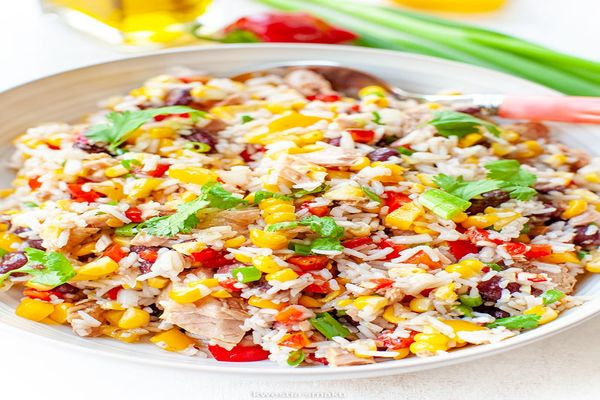

Sałatka ryżowa z tuńczykiem

Przygotowanie krok po kroku
Krok 1
Ryż ugotować zgodnie z instrukcją na opakowaniu, wysypać na duży talerz i całkowicie ostudzić (można przygotować z wyprzedzeniem).
Krok 2
Do ryżu dodać tuńczyka z oliwą lub olejem.
Krok 3
Paprykę i ananasa pokroić w drobną kosteczkę.
Krok 4
Kukurydzę oraz fasolkę wyłożyć na sitko, krótko przepłukać i dobrze odsączyć.
Krok 5
Delikatnie połączyć wszystkie składniki z dodatkiem szczypiorku, kolendry lub natki oraz majonezu, w międzyczasie doprawić też solą i pieprzem oraz opcjonalnie chili.
Krok 6
Wyłożyć do salaterki i udekorować.
Potrzebne składniki
- (100g) ryżu
- (ok. 200g) tuńczyka w oliwie lub oleju
- (0,5 sztuki) czerwonej papryki
- (2 plastry) ananasa
- (1 szutka) puszka kukurydzy
- (1 sztuka) czerwona fasola
- (2 łyżki) posiekanego szczypiorku
- (2 łyżki) posiekanej kolendry
- (1-2 łyżki) majonezu
- możliwość dodania chili do smaku